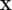
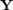
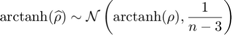
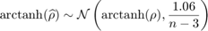
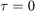
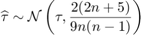
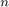

CODES / sensitivity / corr
Compute correlation coefficient
Contents
Syntax
- res=CODES.sensitivity.corr(X,Y) computes selected correlation coefficient rho (or tau) between X and Y.
- res=CODES.sensitivity.corr(...,param,value) uses a list of parameters param and values value (c.f., parameter table).
Description
Compute standard coefficient between  and . Essentially uses matlab built in corr but adds confidence interval (estimates and bootstrap) and some plotting capability.
Sampling distribution
Approximation of the confidence interval are obtained through (approximated) sampling distribution of the correlation coefficient.
- Pearson, using the Fisher transform:

- Spearman, using the Fisher transform (only exact for
 ):
):

- Kendall, using normal assumption (only exact for , bootstrap should be preferred here):

where  is the number of realizations used in the estimates.
Parameters
| param | value | Description |
|---|---|---|
| 'type' | {'pearson'}, 'spearman', 'kendall' | Correlation coefficient type. 'type' can also be a cell array to return several coefficients at once. |
| 'alpha' | positive integer, {0.05} | Significance level for confidence interval. |
| 'CI' | logical, {false} | Whether to return approximations of confidence interval, see Sampling distribution. |
| 'CI_boot' | logical, {false} | Whether to return bootstrapped confidence interval. |
| 'nb_boot' | numeric, {200} | Number of bootstraps |
| 'boot_type' | {'bca'}, 'norm', 'per', 'cper' | Type of bootstrap confidence interval (Efron, 1987) |
| 'pie_plot' | logical, {false} | Whether to provide a pie plot of the output. |
| 'err_plot' | logical, {false} | Whether to provide an error plot of the output. |
| 'xlabel' | cell, { [ ] } | Variable labels to be used in plots. |
Example
Compute and plot an anti-locking sample
f=@(x)1/8*prod(3*x.^2+1,2); X=rand(100,3);Y=f(X); res=CODES.sensitivity.corr(X,Y); disp(res.pearson)
Attempt to execute SCRIPT corr as a function:
/home/lacaze/Dropbox/Beta_Test/temp_publish/corr.m
Error in CODES.sensitivity.corr (line 71)
res_raw.(in.type{i}).rho=corr(in.X,in.Y,'type','Pearson')';
Error in corr (line 100)
res=CODES.sensitivity.corr(X,Y);
Mini Tutorial
 |
A cmini tutorial of the capabilities of the corr function. |
Reference
- Efron (1987): Efron, B. (1987). Better bootstrap confidence intervals. Journal of the American Statistical Association, 82(397), 171-185. DOI
Copyright 2013-2015 Computational Optimal Design of Engineering Systems (CODES) laboratory
|
|
Computational Optimal Design of Engineering Systems |

|